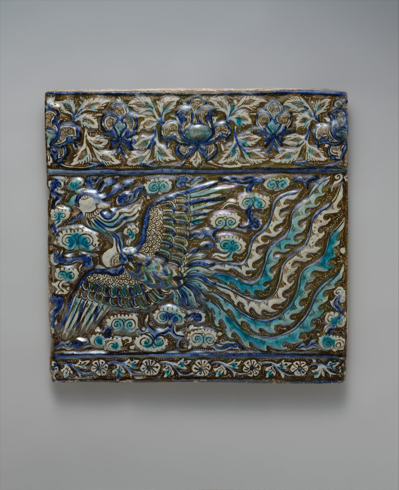
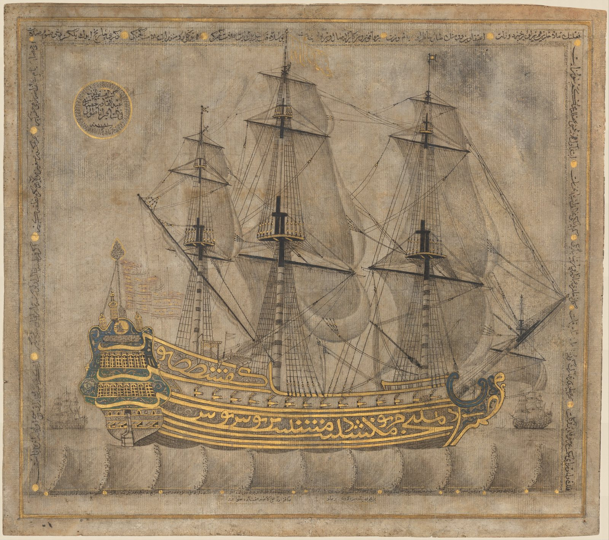

今日一句话总览
过去 72 小时的主线，是大型机构同时在重写三种边界：以跨馆借展与联合收藏重组“谁能拥有、谁能看见”，以返还祖先遗存回应殖民收藏伦理，并以新馆任命与市场监管推动全球艺术基础设施继续向中东、亚洲扩展。与此同时，AI 的焦点正在从“能否生成”转向来源追踪、伙伴模型治理和文化记忆的可信度。
信息来源与检索范围
- 检索时间：2026-08-06 09:01 CST（UTC+8；UTC 01:01）。
- 覆盖地区：北美、欧洲、东亚、西亚、大洋洲、拉丁美洲/加勒比及复活节岛相关文化社群。
- 主要来源：The Art Newspaper、ARTnews、Artnet News、Hyperallergic、Smithsonian、The Met、MMCA 相关报道、K-ARTNOW、CreativeApplications、Rhizome、Ars Electronica、Adobe、Google Blog、Phys.org；以机构稿、专业艺术媒体和可靠科技/科学媒体相互补充。
- 时间范围：优先 2026-08-03 至 08-06（过去 24—72 小时）；展讯、技术与市场背景不足处扩展至 07-30 至 08-02，并逐条标注。
- 访问失败 / 不确定项：Art Newspaper、ARTnews 等网页端本次出现超时，故改用 Google News RSS 索引核对标题、来源和可见发布时间；链接中部分为 Google News 跳转页。尚未从机构日历二次确认的展期均明确写作“待公布/待机构页确认”，不作推定。若标题只支持“宣布”而不支持更多细节，摘要不扩写未核实信息。
开放图像说明
- 配图 1：《凤凰纹砖》，13世纪晚期；The Metropolitan Museum of Art Open Access，Public Domain。
- 配图 2：《书法帆船》，1766—1767年；The Metropolitan Museum of Art Open Access，Public Domain。
- 两图用于补充早报中的伊斯兰艺术公共叙事，不是新闻事件现场照片。
一、必看头条（4 条）
1. 古根海姆阿布扎比分馆任命首任馆长
- 地区 / 机构：阿联酋阿布扎比 / Guggenheim Abu Dhabi
- 来源：ARTnews；备用：Artnet News
- 时间：2026-08-04
- 事件摘要：古根海姆资深策展与管理者 Valerie Hillings 被任命为阿布扎比分馆首任馆长。两家专业媒体分别确认了任命与“首任”性质。
- 为什么重要：这不是普通人事更替，而是新馆从建筑/品牌阶段进入策展、收藏、教育与地方合作制度化阶段的信号；其全球现代艺术叙事如何处理西亚、南亚、非洲与欧美之间的权力关系，将受到持续检验。
- 可延伸观察：首展策展团队、藏品地域比例、阿联酋本地艺术生态投入、劳工与治理透明度。
2. 卢浮宫将向史密森尼借出伊斯兰艺术珍品
- 地区 / 机构：法国巴黎—美国华盛顿 / Louvre、Smithsonian
- 来源：The Art Newspaper；备用：Smithsonian
- 时间：2026-08-05（TAN）；2026-08-04（Smithsonian 可见稿）
- 事件摘要：卢浮宫伊斯兰艺术藏品将赴史密森尼展出；当前可见信息确认合作方向，完整展品清单与展期仍应以馆方落地页面为准。
- 为什么重要：跨大西洋借展把“伊斯兰艺术”从地域专馆语境带入美国国家级公共机构，既扩大可见度，也要求策展避免把跨世纪、跨地区文化压缩成单一风格标签。
- 可延伸观察：展签是否纳入来源地、贸易与殖民流通史；是否与美国穆斯林社群共创公共项目。
3. 澳大利亚博物馆向拉帕努伊归还祖先遗存
- 地区 / 机构：澳大利亚—Rapa Nui（复活节岛）/ Australian Museum
- 来源：The Art Newspaper
- 时间：2026-08-05
- 事件摘要：澳大利亚博物馆把拉帕努伊祖先遗存送返复活节岛。此处使用“祖先遗存”而非“标本”，尊重来源社群的主体性。
- 为什么重要：归还正在从个案道德姿态转为博物馆收藏治理的核心业务，影响登记、研究许可、展示语言、数字副本权限和社群共同决策机制。
- 可延伸观察：归还后的安置与仪式由谁决定；馆方是否公开完整来源链与后续合作协议。
4. 多家博物馆以联合购藏应对价格与代表性压力
- 地区 / 机构：国际 / 多家博物馆
- 来源：Artnet News
- 时间：2026-08-04
- 事件摘要：报道讨论博物馆结盟购买艺术品的上升趋势，以共享成本、轮展和研究资源突破单馆预算限制。
- 为什么重要：联合购藏会改变“永久收藏=单一所有权”的惯例，令保存责任、展出时长、运输碳成本和公众访问权变成合同设计问题。
- 可延伸观察：联合所有权能否帮助中小城市机构，而非仅成为大型馆之间的风险分摊工具。
二、最新展览与展讯（7 条）
1. Taryn Simon 新作将占据古根海姆圆形大厅
- 地点 / 机构：纽约 / Solomon R. Guggenheim Museum
- 来源：ARTnews
- 时间：消息发布 2026-08-03；具体展期待馆方日历确认。
- 主题与亮点：报道确认其全新创作将以圆形大厅为整体场域。Simon 长期处理档案、权力与可见性；这里最值得看的不是“把作品挂满大厅”，而是如何把 Wright 建筑的垂直视线转化为叙事结构。
- 适合关注：摄影、研究型艺术、档案策展、场域特定装置创作者。
2. 《There Are No Words: Si Lewen’s Parade》
- 地点 / 机构：纽约 / The Metropolitan Museum of Art
- 来源：The Met
- 时间：消息发布 2026-08-01（扩展至 7 天）；展期待机构页确认。
- 主题与亮点：展览聚焦 Si Lewen 受二战前及战时经历塑造的一组循环绘画/素描《Parade》。标题“无言”提示图像序列如何在不依赖文字的情况下组织战争记忆。
- 适合关注：叙事绘画、图像小说、战争记忆、博物馆教育与创伤叙事研究者。
3. 李大源（Lee Dai-won）韩国现代主义回顾
- 地点 / 机构：首尔 / MMCA Deoksugung
- 来源：Korea JoongAng Daily
- 时间：2026-08-05；展期以 MMCA 页面为准。
- 主题与亮点：报道以其明亮果园绘画重新评价韩国现代主义，并强调作品在当时语境中的前瞻性。它提供一种跳出“欧美中心现代主义影响史”、从地方景观与色彩语言重写现代性的路径。
- 适合关注：亚洲现代美术史、风景绘画、色彩教学、国家美术馆收藏史研究者。
4. Marie Chouinard《BECOMING BREATH》
- 地点 / 机构：加拿大蒙特利尔 / Montreal Museum of Fine Arts
- 来源：Montreal Museum of Fine Arts
- 时间：消息发布 2026-08-04；具体展期待机构页确认。
- 主题与亮点：标题把“成为”与“呼吸”并置，预示舞蹈/身体实践与展览空间之间的转换。看点是表演艺术进入美术馆后，如何被记录而不被静态物件化。
- 适合关注：行为、舞蹈、影像、身体政治和现场档案策展人。
5. 金正淑自然主题作品在重庆展出
- 地点 / 机构：中国重庆 / 报道未在标题中显示具体场馆
- 来源：iChongqing
- 时间：2026-08-05；展期与具体场馆待主办方页面确认。
- 主题与亮点：韩国艺术家金正淑带来数十年自然主题创作。其价值在于把中韩交流落到长期个人语言，而非泛化的“东方自然观”。
- 适合关注：中韩艺术交流、自然题材、跨文化展览传播者。因场馆信息未完成二次确认，计划参观者需先核实。
6. Shahzia Sikander《High Seas; Closed Skies》
- 地点 / 机构：英国 / Victoria Miro（具体分馆与展期以画廊页为准）
- 来源：Victoria Miro
- 时间：页面可见日期 2026-07-31（7 天扩展）。
- 主题与亮点：标题将开放海域与封闭天空对置，延续 Sikander 以细密画传统处理迁移、帝国和当代政治的实践；适合观察历史媒介如何承担全球化冲突。
- 适合关注：细密画、动画、后殖民研究、南亚当代艺术与跨媒介叙事。
7. 第 59 届卡内基国际中的摄影：《If the word we》
- 地点 / 机构：美国匹兹堡 / Carnegie Museum of Art
- 来源：Flaunt Magazine
- 时间：2026-08-04；具体总展期以卡内基美术馆为准。
- 主题与亮点：新报道从摄影切入第 59 届卡内基国际，标题中的“we”把共同体的定义变成开放问题。可重点看摄影如何不只是记录媒介，而是建立或质疑“我们”的政治技术。
- 适合关注：摄影、双/三年展研究、共同体叙事、编辑与出版。
三、艺术事件 / 机构动态 / 市场与政策（5 条）
1. Gagosian 关闭伦敦一处空间并计划退出巴塞尔地点
- 地区 / 机构：英国伦敦、瑞士巴塞尔 / Gagosian
- 来源：The Art Newspaper；备用：ARTnews
- 时间：2026-07-31 / 08-03（7 天扩展）
- 摘要与意义：两家媒体共同确认收缩动作。它不等于画廊整体衰退，但说明超级画廊也在重新核算高租金常设空间、艺博会和预约制服务之间的投入产出。
2. Michelle Grabner 向 Kohler Arts Center 捐赠逾 2,000 件作品
- 地区 / 机构：美国威斯康星 / John Michael Kohler Arts Center
- 来源：ARTnews
- 时间：2026-08-03
- 摘要与意义：大规模捐赠会迅速扩张馆藏，同时带来登记、保存、版权和展示公平性的长期成本。值得关注馆方是否公布接收标准与分批研究计划，而不只是公布数量。
3. 首届 Art Week NYC 公布 76 家参展画廊
- 地区 / 机构：美国纽约 / Art Week NYC
- 来源：ARTnews
- 时间：2026-08-04；活动计划于 11 月举行。
- 摘要与意义：以城市画廊网络而非单一展馆组织艺术周，可能把客流重新导回常设空间。需观察 76 家名单的地域、规模与族群代表性，以及是否真正降低中小画廊参与门槛。
4. 韩国要求画廊、拍卖行等艺术服务企业强制登记
- 地区 / 机构：韩国 / 艺术服务行业监管
- 来源：K-ARTNOW
- 时间：2026-08-03
- 摘要与意义：强制登记把艺术交易从依赖声誉的行业惯例推向可识别、可追责的经营主体体系。潜在好处是提高透明度，风险是合规成本对小型、非营利或实验空间造成不成比例压力。
5. V&A 工会成员高票支持罢工
- 地区 / 机构：英国伦敦 / V&A museums、Prospect union
- 来源：The Art Newspaper
- 时间：2026-07-30（7 天扩展）
- 摘要与意义：报道以“Amazon-style conditions”概括工会指控。观众体验背后依赖安保、前台、技术与清洁劳动；机构谈“关怀”若不进入用工制度，公共价值叙事就会失真。
四、技术、知识与新观念（5 条）
1. 用 AI 聊天机器人追查纳粹掠夺艺术品
- 来源：Artnet News
- 时间：2026-08-01（7 天扩展）
- 内容：报道介绍一款用于搜寻纳粹掠夺艺术品线索的 AI 聊天机器人。
- 启发与边界：AI 的高价值场景可能不是生成新图，而是跨目录比对名称变体、旧库存号和交易链。但任何提示都只能是线索，必须回到档案原件、专家鉴定与法律程序；模型不可充当出处证明。
2. 传感器嵌入式 3D 打印修补古陶器
- 来源：Phys.org
- 时间：2026-08-01（7 天扩展）
- 内容：研究提出把传感器嵌入 3D 打印修复部件，以帮助监测古代陶器修补后的状态。
- 启发与边界：修复部件从“填补缺口”变成持续读数的维护界面；策展可把监测数据转化为公众理解材料。但材料可逆性、传感器寿命、数据保存与视觉干扰必须优先评估。
3. Adobe 在产品中列出“伙伴模型”机制
- 来源：Adobe Help Center
- 时间：页面更新可见日期 2026-08-03
- 内容：Adobe 更新有关其产品内第三方/伙伴生成模型的说明，同时更新 Firefly 图像变体功能文档。
- 启发与边界：创作者不应把“在同一软件里”误认为训练数据、许可与输出责任完全相同。工作流需记录具体模型、版本、提示、参考图授权和后期改动。
4. Ars Electronica 发布“Hello Futures Manifesto”与 SPACE 项目
- 来源：Hello Futures Manifesto；SPACE
- 时间：2026-08-05 / 08-03
- 内容：Ars Electronica 一周内发布未来宣言，并介绍以创意表达提升科学公共认知的 SPACE 项目。
- 启发与边界：艺术科技机构正把“炫技展示”转向公共未来想象与科学传播。对策展人而言，关键绩效不应只是互动次数，还应包括观众是否理解模型、证据与不确定性。
5. CreativeApplications 连续发布 Yaporigami 与《Geom—Architecture of Determinism》
- 来源：Yaporigami；Geom
- 时间：均为 2026-08-05
- 内容：两个新项目分别从折纸式形态/制作与“决定论建筑”角度进入计算设计。当前索引信息不足以确认全部技术栈，故不推定所用软件或算法。
- 启发与边界：值得关注的是“规则如何长出形式”，而不是只收藏最终图像；教学中可要求学生同时提交规则、失败样本和参数变化，建立可讨论的过程档案。
五、今日组合观察
- **所有权正从单一占有转向关系治理。** 博物馆联合购藏把作品变成跨机构共享责任；拉帕努伊祖先遗存归还则表明，有些对象根本不应继续由博物馆定义为可占有财产。两者共同要求合同、保管和解释权重新设计。
- **全球艺术版图继续向西亚扩展，但“全球”必须落实到叙事权。** 古根海姆阿布扎比首任馆长到位，与卢浮宫—史密森尼伊斯兰艺术借展同步出现。真正的检验不是国际品牌数量，而是西亚、南亚、非洲研究者与社群是否拥有策展和解释权。
- **常设空间正在被重新核算。** Gagosian 收缩伦敦/巴塞尔地点，纽约却新建由 76 家画廊组成的城市艺术周；市场并非简单线上化，而是在“旗舰空间、城市网络、艺博会、预约服务”之间重新分配成本与客流。
- **AI 艺术议题进入“可追溯性阶段”。** 纳粹掠夺艺术品 chatbot 代表检索与来源研究，Adobe 伙伴模型说明代表模型责任分层；创作者与机构接下来最需要的是来源日志和审计流程，而不是更多无差别生成。
- **观众体验开始包含看不见的维护系统。** 传感器 3D 修复使文物维护数据化；V&A 劳资争议提醒，空间同样由人的维护劳动支撑。未来展览伦理应同时披露技术维护和劳动维护。
六、给创作者 / 策展人 / 艺术教育者的启发
- **给创作者：** 建立“作品来源账本”：记录素材授权、生成模型与版本、提示、人工改动、展示依赖和可逆修复信息。面对圆形大厅等强建筑场域，先画观众视线与行动路径，再决定媒介尺度。
- **给策展人 / 空间运营者：** 在借展、联合购藏和大额捐赠协议中，除保险与运输外，增加解释权、数字复制、轮展时长、碳成本、社群访问和退出机制；把安保、前台、技术人员纳入“观众体验”预算，而非后台压缩项。
- **给艺术教育者：** 可设计三组课堂：用 Si Lewen 练习“无文字图像序列”；用联合购藏与归还案例模拟博物馆伦理听证；用 3D 传感修复和 AI 来源研究区分“工具给出的线索”与“可引用的证据”。
七、今日可收藏链接
- 古根海姆阿布扎比任命首任馆长 — 观察西亚大型机构如何形成策展治理。
- 卢浮宫伊斯兰艺术藏品赴史密森尼 — 跨馆借展与伊斯兰艺术公共叙事案例。
- 澳大利亚博物馆归还拉帕努伊祖先遗存 — 收藏伦理与来源社群主权的重要案例。
- 博物馆为何联合购藏 — 共享所有权、轮展与预算协作。
- Taryn Simon 古根海姆圆厅新作 — 强建筑场域中的研究型艺术。
- The Met：Si Lewen《Parade》 — 不借助文字组织战争记忆。
- MMCA 德寿宫：李大源回顾 — 从韩国地方景观重看现代主义。
- 韩国艺术服务企业强制登记 — 亚洲艺术市场透明化的重要监管样本。
- AI chatbot 追查纳粹掠夺艺术品 — AI 用于来源研究，而非只用于图像生成。
- 传感器嵌入式 3D 打印陶器修复 — 把修复部件变成长期监测界面。
- Adobe 产品中的伙伴模型说明 — 建立生成模型版本与责任记录的入口。
- Ars Electronica：Hello Futures Manifesto — 艺术科技从产品展示转向公共未来讨论。
八、明日追踪建议
- 古根海姆阿布扎比是否公布 Valerie Hillings 的上任时间、首展、策展班底与开馆节点。
- 史密森尼是否上线卢浮宫伊斯兰艺术借展的完整展期、展品清单、来源说明与社区项目。
- 澳大利亚博物馆与拉帕努伊方面是否公开归还仪式、来源链、数字资料权限及长期合作协议。
- 韩国艺术服务企业强制登记的适用对象、截止日期、处罚和小型空间豁免机制。
- Taryn Simon 古根海姆项目及第 59 届卡内基国际是否更新官方展期、艺术家名单与公共教育计划。
---